Inference: given a fixed model, generate responses given prompts
Inference shows up in many places:
Why efficiency matters: training is one-time cost, inference is repeated many times

Metrics:
Key considerations in efficiency:
Companies doing inference (a big deal for anyone who has a product or platform):
Open-source packages:
Simplifications (following conventions): F = 4D, D = NH, N = K*G, S = T
FLOPs for a feedforward pass: 6 (BT) * (num_params + O(T))
Setup: multiply X (B x D) and W (D x F) matrix
Intuition: B is batch size, D is hidden dimension, F is up-projection dimension in MLP
Let's do FLOPs and memory read/write accounting for the matrix multiplication (X * W).
Steps:
1. Read X (B x D) from HBM
2. Read W (D x F) from HBM
3. Compute Y = X (B x D) @ W (D x F)
4. Write Y (B x F) to HBM
Let's take stock of the accounting results.
Recall that arithmetic intensity is how much compute we do per byte transferred (want to be high).
Assuming B is much less than D and F, then we can simplify:
Accelerator intensity of H100:
If computation intensity > accelerator intensity, compute-limited (good)
If computation intensity < accelerator intensity, memory-limited (bad)
Conclusion: compute-limited iff B > 295
Extreme case (B = 1, corresponding to matrix-vector product):
Naive inference: to generate each token, feed history into Transformer
Complexity: generating T tokens requires O(T^3) FLOPs (one feedforward pass is O(T^2))
Observation: a lot of the work can be shared across prefixes
Solution: store KV cache in HBM
KV cache: for every sequence (B), token (S), layer (L), head (K), store an H-dimensional vector
Two stages of inference:
1. Prefill: given a prompt, encode into vectors (parallelizable like in training)
2. Generation: generate new response tokens (sequential)
Let's compute the FLOPs and memory IO for both the MLP and attention layers.
S is the number of tokens we're conditioning on, T is the number of tokens we're generating.
Later, we'll specialize to prefill (T = S) and generation (T = 1).
Steps:
1. Read X (B x T x D) from HBM
2. Read Wup (D x F), Wgate (D x F), Wdown (F x D) from HBM
3. Compute U = X (B x T x D) @ Wup (D x F)
4. Write U (B x T x F) to HBM
5. Compute G = X (B x T x F) @ Wgate (D x F)
6. Write G (B x T x F) to HBM
7. Compute Y = GeLU(G)*U (B x T x F) @ Wdown (F x D)
8. Write Y (B x T x D) to HBM
Let's take stock of the accounting results.
Assume that B*T is much smaller than D and F.
For the two stages:
1. Prefill: easy to make compute-limited (good) by making B T large enough
2. Generation:
Steps:
1. Read Q (B x T x D), K (B x S x D), V (B x S x D) from HBM
2. Compute A = Q (B x T x D) @ K (B x S x D)
3. Compute Y = softmax(A) (B x S x T x K x G) @ V (B x S x K x H)
4. Write Y (B x T x D) to HBM
For the two stages:
1. Prefill: T = S
2. Generation: T = 1
Unlike MLPs, no dependence on B, so batching doesn't help!
Why?
Summary
So we have shown that inference is memory-limited.
Let us now compute the theoretical maximum latency and throughput of a single request.
Assumption: can overlap compute and communication perfectly and ignore various types of overhead.
Instantiate latency and throughput for Llama 2 13B on an H100:
The memory, throughput, and latency depends on the shape of the Transformer.
Compute the number of parameters in the Transformer:
To store parameters, just use bf16 (training requires fp32)
We also don't need gradients and optimizer states since we're not training.
But we do have to store the KV cache (which are some of the activations) for each sequence (of length S):
How much we have to store per sequence:
Total memory usage:
Latency is determined by memory IO (read all parameters and KV cache for each step)
Throughput is the inverse of latency, but we're generating B tokens in parallel
If we use a batch size of 1:
If we use a batch size of 64 (worse latency, better throughput):
If we use a batch size of 256:
Doesn't fit into memory, but throughput gains are diminishing too...
Tradeoff between latency and throughput:
1. Smaller batch sizes yields better latency but worse throughput
2. Larger batch sizes yields better throughput but worse latency
Easy parallelism: if you launch M copies of the model, latency is the same, throughput increases by M!
Harder parallelism: shard the model and the KV cache
Note: time-to-first-token (TTFT) is essentially a function of prefill
Use smaller batch sizes during prefill for faster TTFT
Use larger batch sizes during generation to improve throughput
Recall that memory is the bottleneck for inference.
So let's try to reduce the size of the KV cache
...but make sure we don't lose too much accuracy.
Idea: N query heads, but only K key and value heads, each interacting with N/K query heads
Multi-headed attention (MHA): K=N
Multi-query attention (MQA): K=1
Group-query attention (GQA): K is somewhere in between
Latency/throughput improvements:

Reduce the KV cache by a factor of N/K
The memory, throughput, and latency depends on the shape of the Transformer.
Compute the number of parameters in the Transformer:
To store parameters, just use bf16 (training requires fp32)
We also don't need gradients and optimizer states since we're not training.
But we do have to store the KV cache (which are some of the activations) for each sequence (of length S):
How much we have to store per sequence:
Total memory usage:
Latency is determined by memory IO (read all parameters and KV cache for each step)
Throughput is the inverse of latency, but we're generating B tokens in parallel
The memory, throughput, and latency depends on the shape of the Transformer.
Compute the number of parameters in the Transformer:
To store parameters, just use bf16 (training requires fp32)
We also don't need gradients and optimizer states since we're not training.
But we do have to store the KV cache (which are some of the activations) for each sequence (of length S):
How much we have to store per sequence:
Total memory usage:
Latency is determined by memory IO (read all parameters and KV cache for each step)
Throughput is the inverse of latency, but we're generating B tokens in parallel
This also means we can use a larger batch size:
The memory, throughput, and latency depends on the shape of the Transformer.
Compute the number of parameters in the Transformer:
To store parameters, just use bf16 (training requires fp32)
We also don't need gradients and optimizer states since we're not training.
But we do have to store the KV cache (which are some of the activations) for each sequence (of length S):
How much we have to store per sequence:
Total memory usage:
Latency is determined by memory IO (read all parameters and KV cache for each step)
Throughput is the inverse of latency, but we're generating B tokens in parallel
Worse latency, but better throughput (and it fits in memory now!).
Check that accuracy doesn't drop:
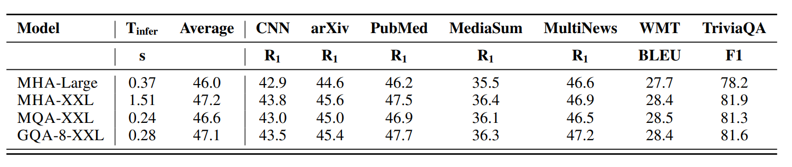

Key idea: project down each key and value vector from N*H dimensions to C dimensions
DeepSeek v2: reduce N*H = 16384 to C = 512
Wrinkle: MLA is not compatible with RoPE, so need to add additional 64 dimensions for RoPE, so 512 + 64 = 576 total dimensions
Latency/throughput improvements follow similarly from the KV cache reduction as argued earlier
Let's now check the accuracy.
First, MHA is better than GQA (though more expensive) [Table 8]

Second, MLA is a bit better than MHA (and much cheaper) [Table 9]

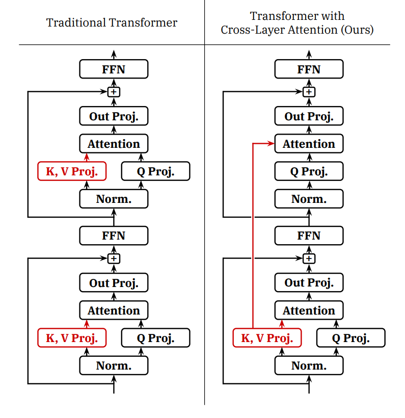
Idea: share KVs across layers (just as GQA shares KVs across heads)
Empirically improves the pareto frontier of accuracy and KV cache size (latency and throughput)
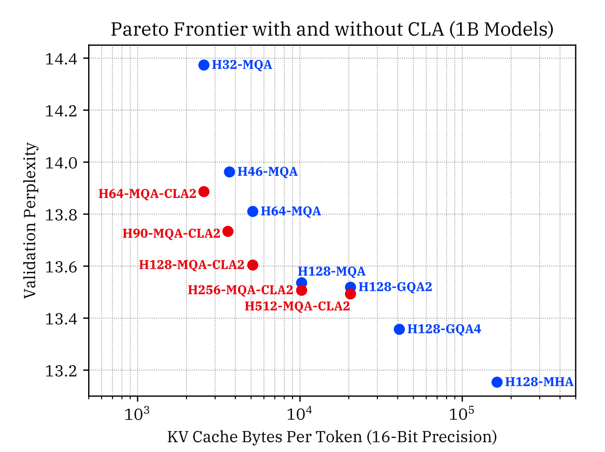

Idea: just look at the local context, which is most relevant for modeling
Effective context scales linearly with the number of layers
KV cache is independent of sequence length!
Problem: this can still hurt accuracy
Solution: interleave local attention with global attention (hybrid layers)
Example: character.ai uses 1 global layer every 6 layers (in addition to CLA)
Summary:
We have shown that tweaking the architecture of the Transformer, we can improve latency and throughput.
Attention + autoregression is fundamentally memory-limited (Transformers were not designed with inference in mind).
Can we substantially improve things if we go beyond the Transformer?
We will discuss two directions: state-space models and diffusion models.
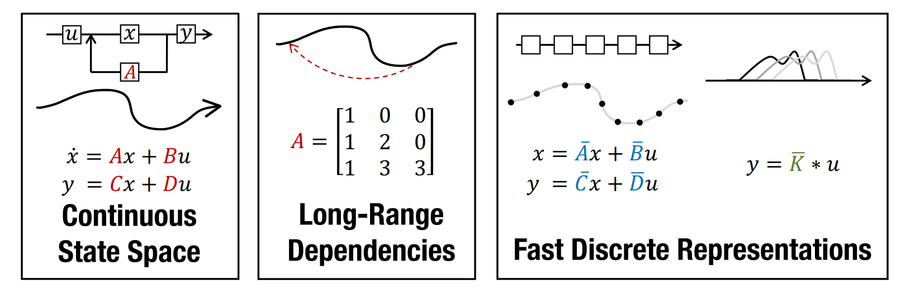
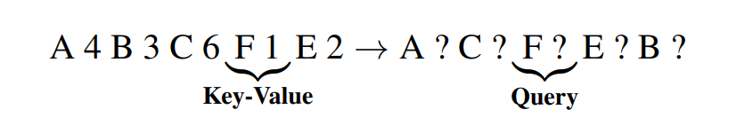
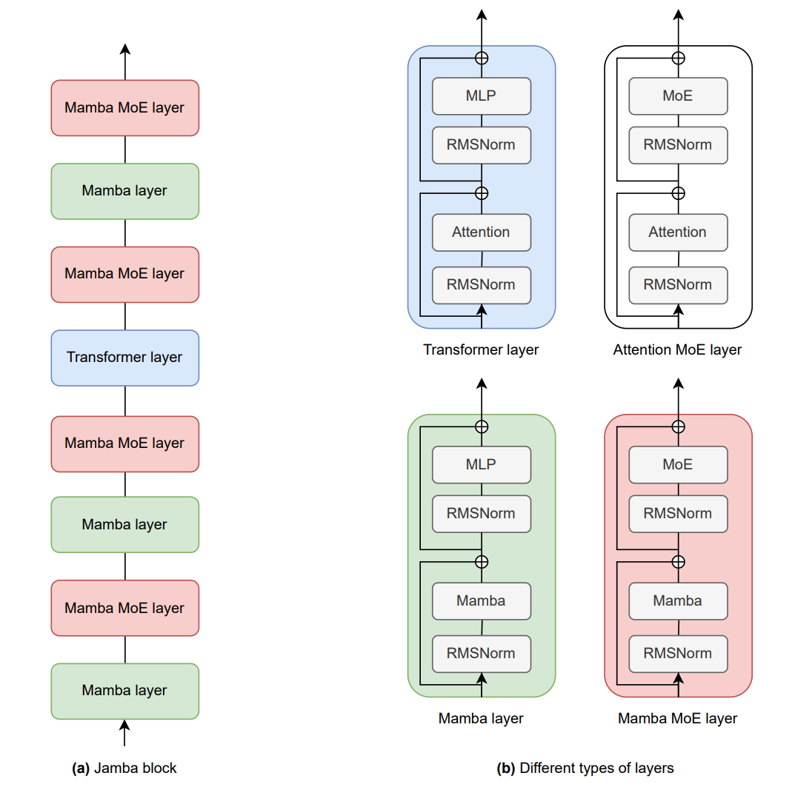
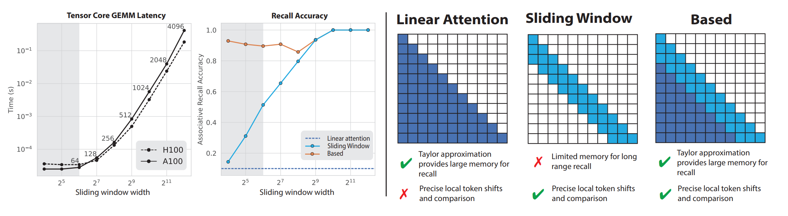
Takeaways:
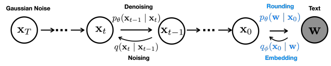
Much faster on coding benchmarks:
Overall, significant gains in inference to be made with more radical architecture changes!
Key idea: reduce the precision of numbers
Less memory means higher latency/throughput (since inference is memory-limited).
Of course we have to worry about accuracy...
Quantization-aware training (QAT): train with quantization, but doesn't scale up
Post-training quantization (PTQ): run on sample data to determine scale and zero point for each layer or tensor
Standard quantization (scale by max of absolute values):
Problem: outliers (which appear in larger networks) screw everything up
Solution: extract outliers and process them in fp16
It works well (but is 15-23% slower than fp16):
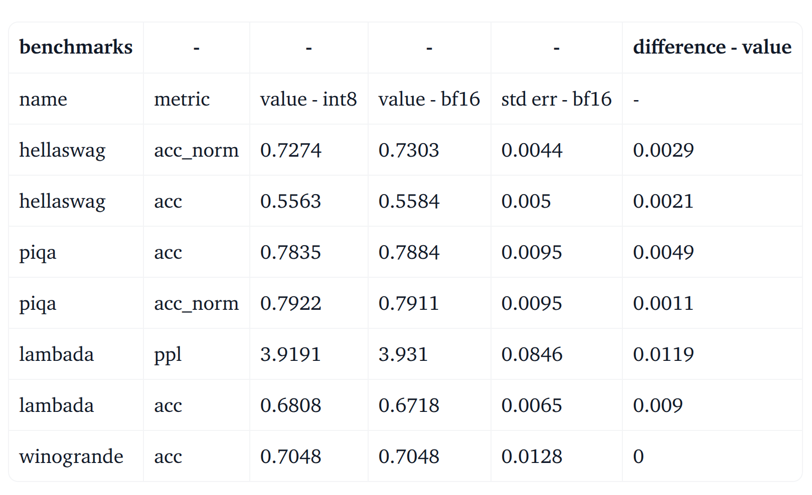
Idea: select which weights (0.1-1%) to keep in high precision based on activations
fp16 -> int3 produces 4x lower memory, 3.2x speedup

Key idea: just rip out parts of an expensive model to make it cheaper
...and then fix it up.
Paper from NVIDIA
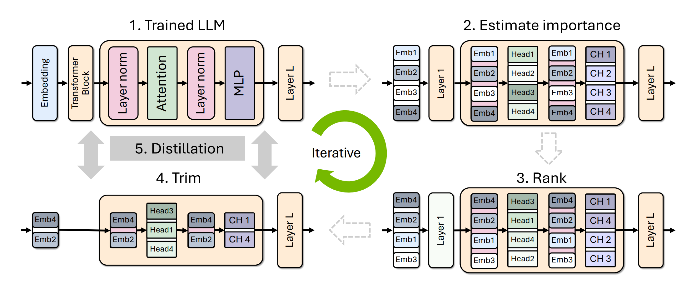
Algorithm:
1. Identify important {layer, head, hidden dimension} on a small calibration dataset (1024 samples)
2. Remove unimportant layers to get a smaller model
3. Distill the original model into pruned model
Results:
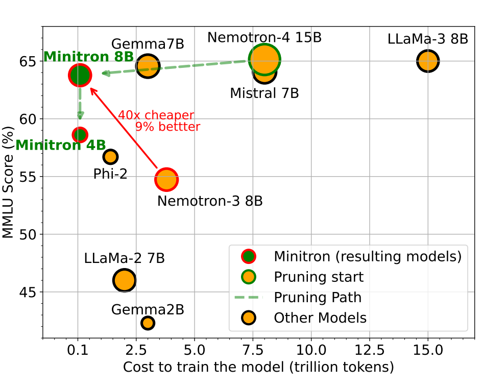
Summary: reduce inference complexity without hurting accuracy
From scratch recipe:
1. Define faster model architecture
2. Train faster model
Distillation recipe:
1. Define faster model architecture
2. Initialize weights using original model (which has a different architecture)
3. Repair faster model (distillation)
Recall the two stages of inference:
In other words, checking is faster than generation.
Speculative sampling
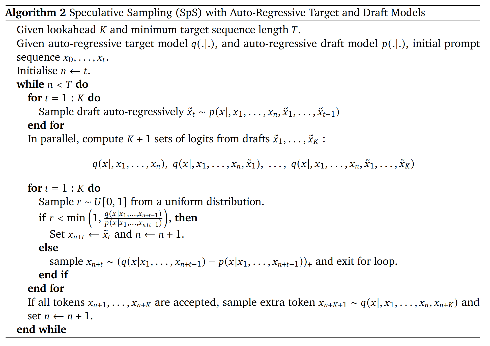
This is modified rejection sampling with proposal p and target q
Modification: always generate at least one candidate (rejection sampling will keep looping)
Key property: guaranteed to be an exact sample from the target model!
Proof by example: assume two vocabulary elements {A, B}
Compute the probabilities of speculatively sampling a token:
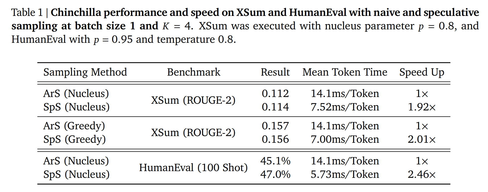
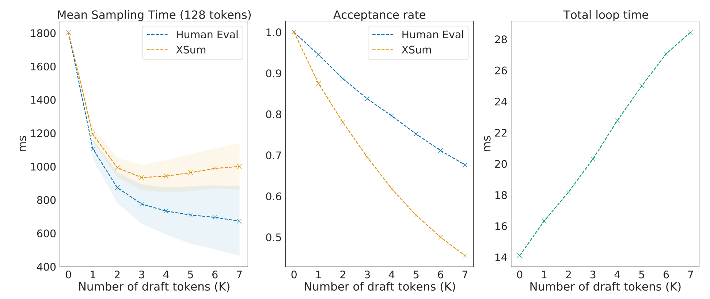
In practice:
Extensions to improve the draft model:
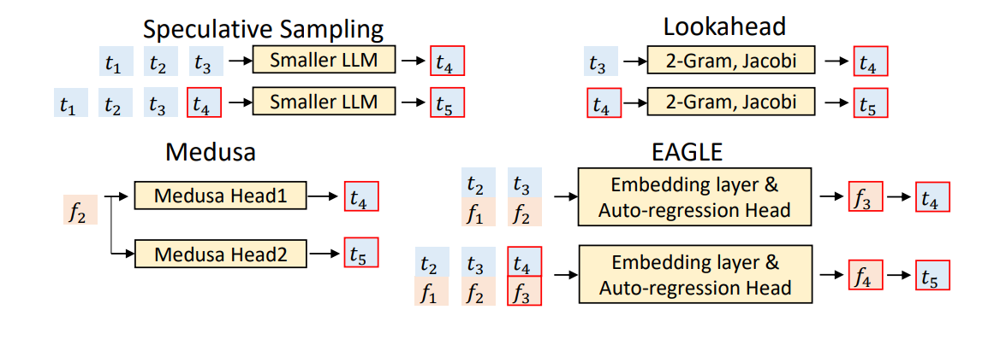
Summary:
Batching over sequences in live traffic is tricky because:
1. Requests arrive at different times (waiting for batch is bad for early requests)
2. Sequences have shared prefixes (e.g., system prompts, generating multiple samples)
3. Sequences have different lengths (padding is inefficient)
Problem:
Solution: iteration-level scheduling
Problem:
Solution: selective batching
Paper that introduced vLLM in addition to PagedAttention
Previous status quo:
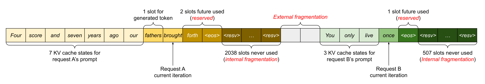
Problem: fragmentation (what happens to your hard drive)
Solution: PagedAttention (remember operating systems)
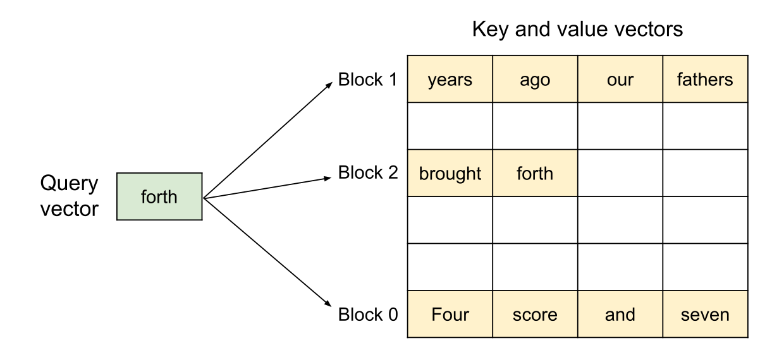
Two requests share the KV caches:

In general, multiples types of sharing KV caches across sequences:

Solution: share prefixes, copy-on-write at the block level
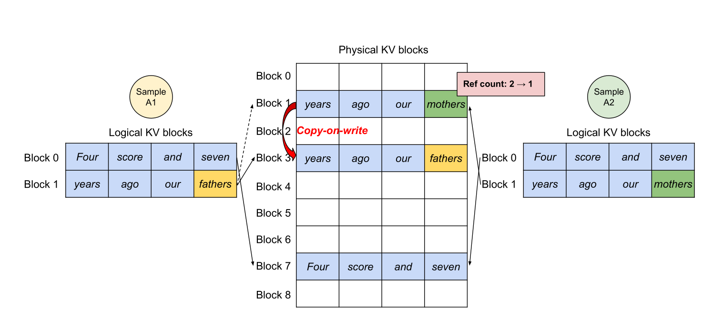
Other vLLM optimizations:
Summary: use ideas from operating systems (paging) to make use of memory for dynamic workloads